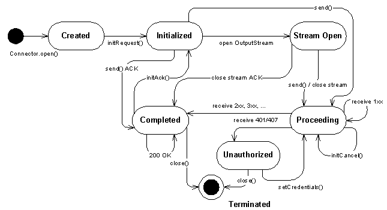

|
||||||||||
| PREV CLASS NEXT CLASS | FRAMES NO FRAMES | |||||||||
| SUMMARY: NESTED | FIELD | CONSTR | METHOD | DETAIL: FIELD | CONSTR | METHOD | |||||||||
SipClientConnection represents SIP client transaction. application can create a new SipClientConnection with Connector or SipDialog object.
The SipClientConnection has following state chart:

initRequest
addHeader
setHeader
removeHeader
setRequestURI
openContentOutputStream
send
enableRefresh
setCredentials
OutputStream and SipConnection.send
receive
openContentInputStream
initCancel
openContentInputStream
initAck
setCredentials
getHeader
getHeaders
getRequestURI
getMethod
getStatusCode
getReasonPhrase
getDialog
setListener
close // causes state transition to Terminated state
public void sendTextMessage(String msg) {
SipClientConnection sc = null;
try {
sc = (SipClientConnection) Connector.open("sip:sippy.tester@host.com:5060");
sc.initRequest("MESSAGE", null);
sc.setHeader("Subject", "testing...");
// write message body
sc.setHeader("Content-Type", "text/plain");
sc.setHeader("Content-Length", Integer.toString(msg.length()));
OutputStream os = sc.openContentOutputStream();
os.write(msg.getBytes());
os.close(); // close stream and send the message
// wait maximum 15 seconds for response
boolean ok = sc.receive(15000);
if(ok) { // response received
if(sc.getStatusCode() == 200) {
// handle 200 OK response
} else {
// handle possible error responses
}
}
sc.close();
} catch(Exception ex) {
// handle Exceptions
}
}
Following class shows the same example using callback listener interface:
public class SipClient implements SipClientConnectionListener {
public void sendTextMessage(String msg) {
SipClientConnection sc = null;
try {
sc = (SipClientConnection) Connector.open("sip:sippy.tester@host.com:5060");
sc.setListener(this);
sc.initRequest("MESSAGE", null);
sc.setHeader("Subject", "testing...");
sc.setHeader("Content-Type", "text/plain");
sc.setHeader("Content-Length", Integer.toString(msg.length()));
OutputStream os = sc.openContentOutputStream();
os.write(msg.getBytes());
os.close(); // close stream and send message
} catch(Exception ex) {
// handle Exceptions
}
return;
}
public void notifyResponse(SipClientConnection scn) {
try {
// retrieve the response received
sc.receive(0); // does not block response is there
if(sc.getStatusCode() == 200) {
// handle 200 OK response
} else {
// handle possible error responses
}
sc.close();
} catch(Exception ex) {
// handle Exceptions
}
}
}
SipClientConnectionListener,
SipConnectionNotifier,
SipServerConnection,
SipDialog.getNewClientConnection(String)| Method Summary | |
int |
enableRefresh(SipRefreshListener srl)
Enables the refresh on for the request to be sent. |
void |
initAck()
Convenience method to initialize SipClientConnection with SIP request method ACK. |
SipClientConnection |
initCancel()
Convenience method to initialize SipClientConnection with SIP request method CANCEL. |
void |
initRequest(java.lang.String method,
SipConnectionNotifier scn)
Initializes SipClientConnection to a specific SIP request method (REGISTER, INVITE, MESSAGE, ...). |
boolean |
receive(long timeout)
Receives SIP response message. |
void |
setCredentials(java.lang.String username,
java.lang.String password,
java.lang.String realm)
Sets credentials for possible digest authentication. |
void |
setListener(SipClientConnectionListener sccl)
Sets the listener for incoming responses. |
void |
setRequestURI(java.lang.String URI)
Sets Request-URI explicitly. |
| Methods inherited from interface javax.microedition.sip.SipConnection |
addHeader, getDialog, getHeader, getHeaders, getMethod, getReasonPhrase, getRequestURI, getStatusCode, openContentInputStream, openContentOutputStream, removeHeader, send, setHeader |
| Methods inherited from interface javax.microedition.io.Connection |
close |
| Method Detail |
public void initRequest(java.lang.String method,
SipConnectionNotifier scn)
throws java.lang.IllegalArgumentException,
SipException
The headers From, Contact are set according to the properties of SipConnectionNotifier given as the second parameter. If SipConnectionNotifier is null headers From, Contact are not set.
Headers that will be initialized are as follows:
To // To address constructed from SIP URI given in Connector.open()
From // Set by the system. If SipConnectionNotifier is given and the
SIP identity is shared the value will be set according the
terminal SIP settings (see SIP Identity
for more details). If the SipConnectionNotifier is not given
(= null) and/or the SIP identity is not shared the From
header must be set to a default value e.g. anonymous URI
(see RFC 3261 [1], chapter 8.1.1.3 From).
CSeq // Set by the system
Call-ID // Set by the system
Max-Forwards // Set by the system
Via // Set by the system
Contact // Set by the system (if SipConnectionNotifier is given) for
REGISTER, INVITE and SUBSCRIBE. The value will be set
according to the terminal IP settings and the
SipConnectionNotifier properties. So the new request
is associated with the SipConnectionNotifier. The
other end can use the contact for subsequent requests.
Reference RFC 3261 [1] p.35 (8.1.1 Generating the Request) and p.159 (20 Header Fields)
method - Name of the methodscn - SipConnectionNotifier to which the request will be associated. If SipConnectionNotifier is null the request will not be associated to a user defined listening point.
java.lang.IllegalArgumentException - if the method is invalid
SipException - INVALID_STATE if the request can not be set, because of wrong state in SipClientConnection. Furthermore, ACK and CANCEL methods can not be initialized in Created state.SipConnectionNotifier
public void setRequestURI(java.lang.String URI)
throws java.lang.IllegalArgumentException,
SipException
URI - Request-URI
java.lang.IllegalArgumentException - MAY be thrown if the URI is invalid
SipException - INVALID_STATE if the Request-URI can not be set, because of wrong state, INVALID_OPERATION if the Request-URI is not allowed to be set.
public void initAck()
throws SipException
At least Request-URI and following headers will be set by the method (RFC 3261 [1] 12.2.1.1 Generating the Request p.73 and 8.1.1 Generating the Request p.35).
See also RFC 3261 [1] 13.2.2.4 2xx Responses (p.82)
Request-URI // system uses the remote target and route set to build the Request-URI
To // remote URI from the dialog state + remote tag of the dialog ID
From // local URI from the dialog state + local tag of the dialog ID
CSeq // the sequence number of the CSeq header field MUST be the same as
the INVITE being acknowledged, but the CSeq method MUST be ACK.
Call-ID // Call-ID of the dialog
Via // Via header field indicates the transport used for the transaction
and identifies the location where the response is to be sent
Route // system uses the remote target and route set (if present)
to build the Route header
Contact // SHOULD include a Contact header field in any target refresh
requests within a dialog, and unless there is a need to change
it, the URI SHOULD be the same as used in previous requests within
the dialog
Max-Forwards // header field serves to limit the number of hops a request can
transit on the way to its destination.
The following rules also apply:
a) For error responses (3xx-6xx) the ACK is sent automatically by the system in transaction level. If user
initializes an ACK which has already been sent an Exception will be thrown.
b) Using initRequest("ACK", null) builds the request
from scratch and does not set the headers according to the current
SIP dialog.
SipException - INVALID_STATE if the request can not be set, because of wrong state, INVALID_OPERATION if the ACK request can not be initialized for other reason (already sent or the original request is non-INVITE).
public SipClientConnection initCancel()
throws SipException
The following information will be set by the method:
Request-URI // copy from original request
To // copy from original request
From // copy from original request
CSeq // same value for the sequence number as was present in the original
request, but the method parameter MUST be equal to "CANCEL"
Call-ID // copy from original request
Via // single value equal to the top Via header field of the request
being cancelled
Route // If the request being cancelled contains a Route header field, the
CANCEL request MUST include that Route header field's values
Max-Forwards // header field serves to limit the number of hops a request can
transit on the way to its destination.
Reference RFC 3261 [1] p.53-54
Note: using initRequest("CANCEL", null); builds the request
from scratch and does not set the headers according to the current SIP
dialog.
A CANCEL request SHOULD NOT be sent to cancel a request other than
INVITE.
SipException - INVALID_STATE if the request can not be set, because of wrong state (in SipClientConnection) or the system has already got the 200 OK response (even if not read with receive() method). INVALID_OPERATION if CANCEL method can not be applied to the current request method.
public boolean receive(long timeout)
throws SipException,
java.io.IOException
timeout - the maximum time to wait in milliseconds. 0 = do not wait, just poll
java.io.IOException - if the message could not be received
or because of network failure
SipException - INVALID_STATE if the receive can not
be called because of wrong state.SipConnection.send()
public void setListener(SipClientConnectionListener sccl)
throws java.io.IOException
sccl - reference to the listener object. Value null will remove the existing listener.
java.io.IOException - if the connection is closed
public int enableRefresh(SipRefreshListener srl)
throws SipException
srl - callback interface for refresh events, if this is null
the method returns 0 and refresh is not enabled.
SipException - INVALID_STATE if the
refresh can not be enabled in this state.SipRefreshHelper
public void setCredentials(java.lang.String username,
java.lang.String password,
java.lang.String realm)
throws SipException
username - username (for this protection domain)password - user password (for this protection domain)realm - defines the protection domain
java.lang.NullPointerException - if the username, password or realm is null
java.lang.SipException - INVALID_STATE if the credentials can not
be set in this state.
SipException
|
||||||||||
| PREV CLASS NEXT CLASS | FRAMES NO FRAMES | |||||||||
| SUMMARY: NESTED | FIELD | CONSTR | METHOD | DETAIL: FIELD | CONSTR | METHOD | |||||||||